<!doctype html>
<html class="no-js" lang="">
<head>
<meta http-equiv="Content-type" content="text/html; charset=UTF-8">
<meta http-equiv="x-ua-compatible" content="ie=edge">
<meta name="description" content="M5Stack sound - LetsIoT">
<meta name="viewport" content="width=device-width, initial-scale=1">
<title>M5Stackで音を測る - AmbientでIoTをはじめよう</title>
<link rel="shortcut icon" href="/favicon.ico" />

<link rel="stylesheet" href="https://maxcdn.bootstrapcdn.com/bootstrap/3.3.7/css/bootstrap.min.css" integrity="sha384-BVYiiSIFeK1dGmJRAkycuHAHRg32OmUcww7on3RYdg4Va+PmSTsz/K68vbdEjh4u" crossorigin="anonymous">
<link rel="stylesheet" href="https://maxcdn.bootstrapcdn.com/bootstrap/3.3.7/css/bootstrap-theme.min.css" integrity="sha384-rHyoN1iRsVXV4nD0JutlnGaslCJuC7uwjduW9SVrLvRYooPp2bWYgmgJQIXwl/Sp" crossorigin="anonymous">

<style>
    body {
        /* padding-top: 20px;
        padding-bottom: 20px; */
    }
    .navbar {
        margin-bottom: 60px;
        height: 140px;
    }
    .navbar-brand img {
        padding: 40px 0;
    }
    .footer {
        margin-top: 60px;
        background: #F7F7F7;
    }
    .footer ul {
        padding-top: 35px;
        padding-left: 0px;
        margin-left: 0px;
    }
    .footer li {
        line-height: 25px;
        padding-left: 0px;
        margin-left: 0px;
        list-style: none;
    }
    .footer a {
        color: #999;
        font-weight: bold;
    }
    .footer #copyright {
        clear: left;
        margin-top: 35px;
        margin-bottom: 20px;
    }
    .alert-info {
        margin-top: 70px;
        background-image: none !important;
    }
    h2 {
        margin-top: 40px;
    }
    .submenu li {
        margin-bottom: 6px;
    }
</style>
</head>
<body>

<div class="navbar navbar-default">
    <div class="container">
        <div class="container-fluid">

            <div class="navbar-header">
                <a class="navbar-brand" href="https://www.switch-science.com/">
                    
                </a>
            </div>

          </div>
    </div>
</div>

<div class="wrap">
    <div class="container">

        <div class="row">
            <div class="col-lg-8 col-sm-9 hidden-xs" style="margin-bottom: 20px;">
                <h1>AmbientでIoTをはじめよう</h1>
            </div>
            <div class="col-lg-8 col-sm-9 hidden-xs">
                <p class="text-right">2019年1月26日</p>
            </div>
            <div class="col-lg-8 col-sm-9 hidden-xs">
                <h1>M5Stackで音を測る</h1>
            </div>

            <div class="col-sm-9 col-lg-8">
                <p>「AmbientでIoTをはじめよう」、第16回はM5Stackを使って音を測ります。</p>

                <p>音は設備の異常検知などをする際の重要なデーターです。
                    音による異常検知では、音の大きさや周波数成分が正常時と大きく異なるときに異常と判断します。
                    正常値のデーターを学習し、異常値を検出するのは機械学習などでおこないます。</p>
                <p>今回は、M5Stackにマイクモジュールをつないで、音の大きさと周波数成分を測ります。</p>

                <h2 id="mic">マイクモジュール</h2>

                <p>マイクは言うまでもなく音を電気信号に変換するものです。
                    マイコンに接続するマイクとしてはエレクトレットコンデンサーマイクとMEMS技術で作られたマイクがよく使われます。</p>

                <p>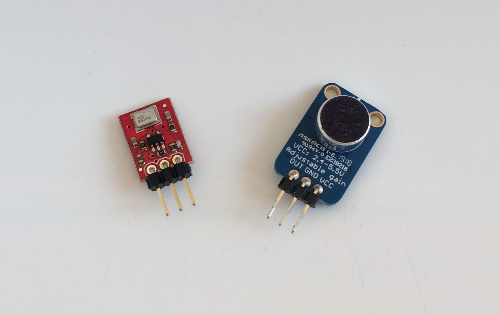</p>

                <p>写真の左はMEMSマイクの「<a href="https://www.switch-science.com/catalog/419/">ADMP401搭載MEMSマイクモジュール</a>」、
                    右は<a href="https://www.switch-science.com/catalog/1680/">エレクトレットコンデンサーマイクを使ったマイクモジュール</a>です。</p>

                <p>エレクトレットコンデンサーマイクはコンデンサーマイクの一種です。
                    コンデンサーの電極の一方を薄膜にして、音によって生じる膜の振動を、電圧の変化として取り出すものです。
                    電極にエレクトレット素子（半永久的に電荷を蓄える高分子化合物）を用いることで低い電圧で動作可能になっています。</p>

                <p>MEMSマイクはエレクトレットコンデンサーマイクと同じ原理ものをMEMS(Micro Elerctronics Mechanical System)技術で構成したものです。
                    非常に小型で、振動、衝撃、温度変化に強いといった特徴があります。</p>

                <p>今回はMEMSマイクの「<a href="https://www.switch-science.com/catalog/419/">ADMP401搭載MEMSマイクモジュール</a>」を使いました。</p>

                <div align="center">
                    <table class="table table-bordered" style="font-size:0.9em; width: 40%;">
                        <tbody>
                            <tr><td>電源電圧</td><td>1.5〜3.3V</td></tr>
                            <tr><td>出力</td><td>アナログ出力 (無音時Vccの1/2)</td></tr>
                            <tr><td>周波数特性</td><td>100Hz〜15kHzまでフラット</td></tr>
                        </tbody>
                    </table>
                </div>

                <h2 id="hardware">マイクをM5Stackに接続する</h2>

                <p>マイクの出力はアナログ信号なので、M5Stackに搭載されているESP32のADコンバーターで値を読めます。
                    マイクとM5Stackは次のように接続します。</p>

                <div align="center">
                    <table class="table table-bordered" style="font-size:0.9em; width: 40%;">
                        <tbody>
                            <tr><td>M5Stack</td><td>ADMP401搭載MEMSマイクモジュール</td></tr>
                            <tr><td36></td><td>AUD</td></tr>
                            <tr><td>3V3</td><td>Vcc</td></tr>
                            <tr><td>GND</td><td>GND</td></tr>
                        </tbody>
                    </table>
                </div>

                <p>ジャンパーワイヤーでも接続できますが、今回は小さな基板を作って接続してみました。
                    こうするとコンパクトなセンサー端末になります。</p>

                <p>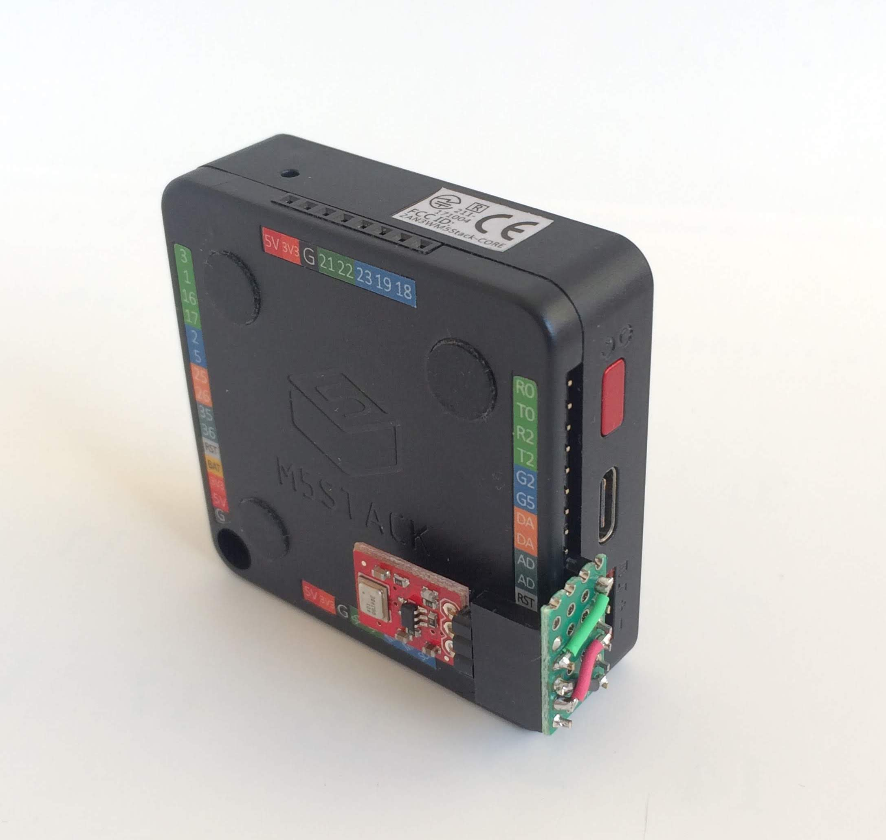</p>

                <h2 id="readmic">マイクの信号を読む</h2>

                <p>マイクの出力はArduinoであればanalogRead()関数で値を読めます。</p>

                <p>音は振動なので周期的に値が変化します。
                    音を記録するためには音の周期の2倍以上の周期で値を測定(サンプリング)する必要があります。
                    人が聞こえる音の周波数範囲は、個人差や年齢差はあるものの一般的には20Hzから20kHz程度と言われています。
                    そこで、次のプログラムでは40kHzの周期でマイクの信号を読み、メモリーに保存して、シリアルに出力してみます。</p>

                <p>40kHzというのは1秒間に4万回、25マイクロ秒毎に1回測定することになります。
                    このプログラムでは500回測定しているので、時間にすると12.5ミリ秒間の音を測定しています。</p>

                <script src="https://gist.github.com/TakehikoShimojima/a2034e58e7e1a82d23122a31a4384597.js"></script>

                <p>26行目のfor文で500回繰り返して、28行目のanalogRead()でマイクの出力を測定し、メモリーに保存しています。
                    周期処理は周期時間内に収まる必要があります。
                    M5StackでのanalogRead()の実行時間を測ったところ約9.5マイクロ秒でしたので、周期時間25マイクロ秒よりも短い時間で実行できていました。
                    analogRead()の実行には10マイクロ秒程度かかるので、
                    10マイクロ秒単位の周期処理をおこなう時は処理時間が周期時間に収まっているかを確認することは重要です。</p>

                <p>25マイクロ秒の周期処理は29行目のwhile文でおこないます。
                    周期処理の先頭(27行目)でmicros()関数で経過時間を測り、while文で経過時間が先頭から25マイクロ秒経つまで時間調整しています。</p>

                <p>M5Stackにマイクモジュールをつなぎ、このプログラムをビルドして、動かします。
                    Arduino IDEのシリアルモニタの代わりにシリアルプロッタを立ち上げてみましょう。</p>

                <p>特に音源を用意していなければ、測定している場所の環境雑音が測定され、次のような出力が得られます。
                    シリアルプロッタは数字の列をグラフ表示してくれるので、センサーの値を確認するときなどに便利です。</p>

                <p>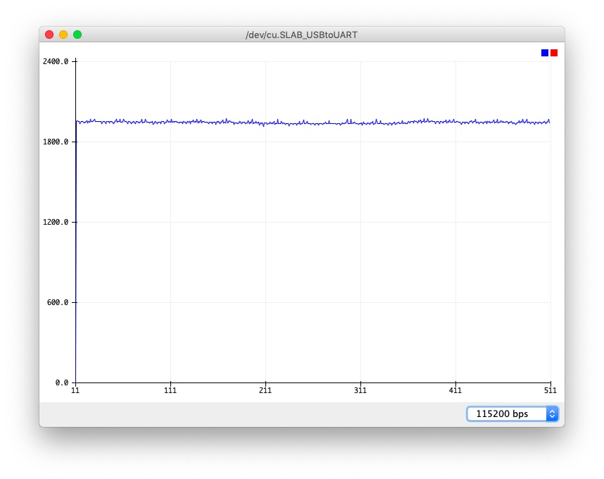</p>

                <p>M5StackのAD変換は12ビットの分解能で、0〜3.6vの入力に対して0〜4095の値が返されます。
                    「ADMP401搭載MEMSマイクモジュール」は無音時にVccの1/2の出力になるので、2000前後の値が読めています。</p>

                <p>プログラムの16行目で M5.Lcd.setBrightness(20); でLCDの輝度を下げています。
                    M5StackのLCDはLEDのバックライトがついていて、LCDの輝度はこのLEDをPWM(パルス幅変調)することで制御しています。
                    このPWMの周波数が10kHzで、デフォルトの輝度だとこの信号をADCが拾ってしまい、次のように無音時でも10kHzの信号が測定されてしまいました。
                    LCDの輝度を下げることでPWMの影響を低減させています。</p>

                <p>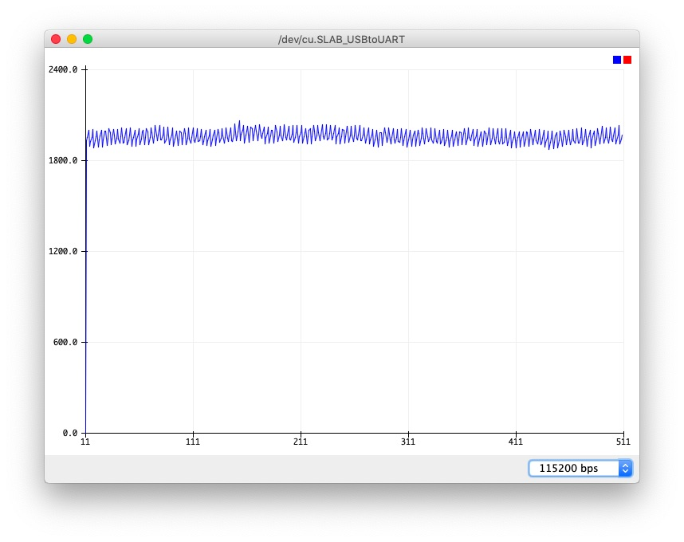</p>

                <p>次にスマートフォンの音生成アプリを使い、リファレンス音を生成して、測定してみます。
                    音生成アプリとしては「Audio Tone Generator LITE」などが便利です。</p>

                <p>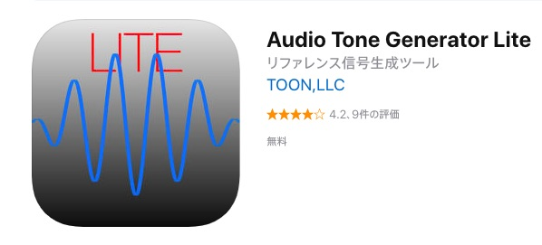</p>

                <p>ATG LITEを使って1000Hzの正弦波(sine波)を発生させます。</p>

                <p>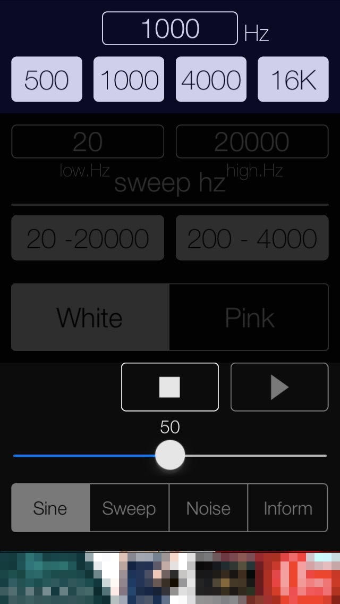</p>

                <p>先ほどのプログラムを動かして、マイクで音を測定し、シリアルプロッタで出力を表示してみます。
                    こんな感じの波形が表示されます。</p>

                <p>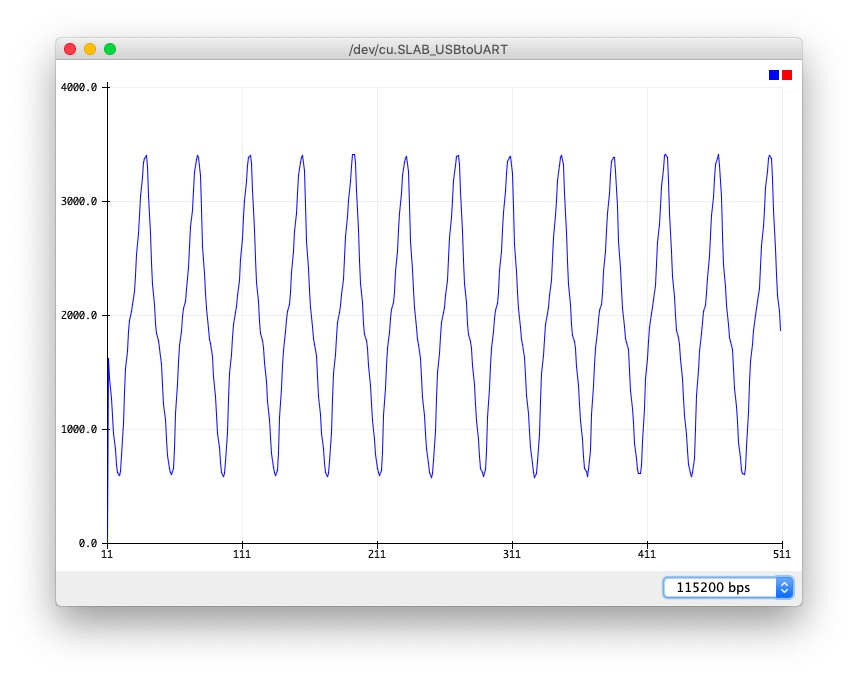</p>

                <p>シリアルプロッタは最後の500件のデーターを表示します。
                    画面を見ると約12.5回の波が記録されています。
                    25マイクロ秒周期で500回、12.5ミリ秒の時間に約12.5回の波なので、波の周期は約1ミリ秒、周波数1000Hzの音が測定できています。</p>

                <p>音の周波数を500Hzにして、同じように測定してみると、次のような波形が表示されます。</p>

                <p>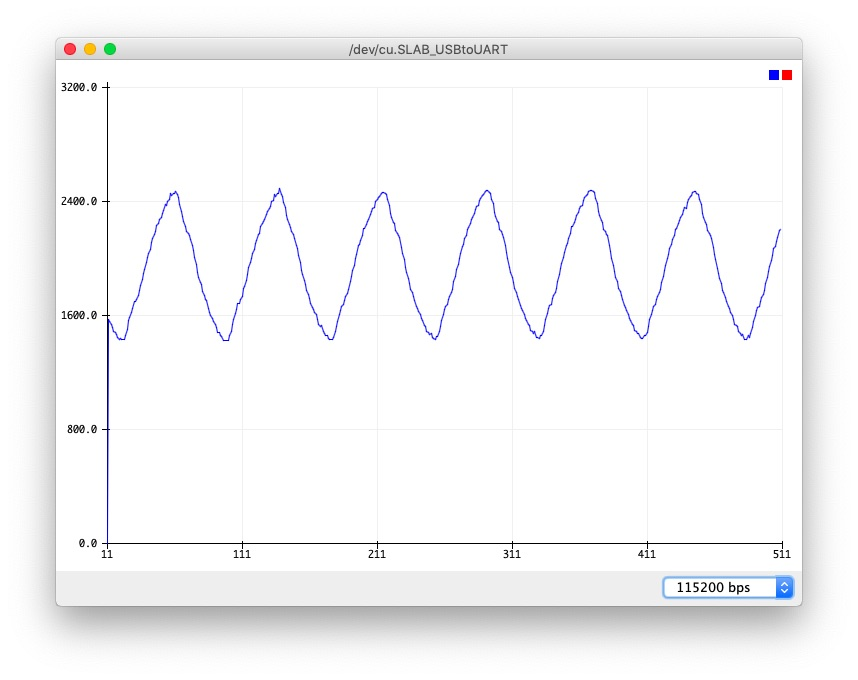</p>

                <p>波の間隔が2倍程度に伸びており、500Hzの音が測定できています。</p>

                <h2 id="lcd">音の波形をLCDに表示する</h2>

                <p>音を測定して波形が確認できたので、この波形をLCDに表示します。</p>

                <p>M5StackのLCDの横幅が320ピクセルなので、300回データーを測定してメモリーに保存し、表示しました。
                    グラフを描画する部分のプログラムは次のようになります。</p>

                <script src="https://gist.github.com/TakehikoShimojima/fe027d0dcb9ad71df037f981d6d79911.js"></script>

                <p>グラフ描画はM5.Lcd.drawLine()でおこなっています。
                    横軸は左に10ピクセルの余白を置き、10ピクセルから1ピクセルずつ増やしていきます。
                    縦軸は1周期の最小値と最大値を求め、次の周期のグラフの縦軸の最小値と最大値にしています。</p>

                <p>Audio Tone Generator LITEを使って1000Hzの正弦波(sine波)を発生させた時の
                    M5Stackの画面は次のようになりました。</p>

                <p>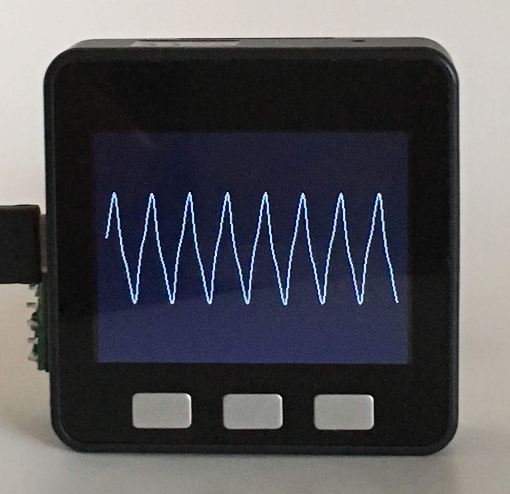</p>

                <h2 id="fft">周波数成分を調べる</h2>

                <p>一般的に音はいくつもの周波数の音の組み合わせでできています。
                    サンプリングした波形を高速フーリエ変換(FFT: Fast Fourier Transform)することで、音を構成する主な周波数の成分を調べられます。</p>

                <p>Arduinoで動くFFTライブラリはいくつかあります。
                    Arduino IDEのライブラリマネージャからインストールできるものとしては<a href="https://github.com/kosme/arduinoFFT">arduinoFFT</a>があります。</p>

                <p>Arduino IDEのスケッチ→ライブラリをインクルード→ライブラリを管理...を選択してライブラリマネージャを立ち上げ、右上の検索窓に「fft」と入力します。
                    いくつかFFTライブラリが表示されますが、その中の「arduinoFFT by Enrique Condes」をインストールします。
                    「More info」をクリックすると図のように「インストール」ボタンが現れるので、それをクリックすればインストール完了です。</p>

                <p>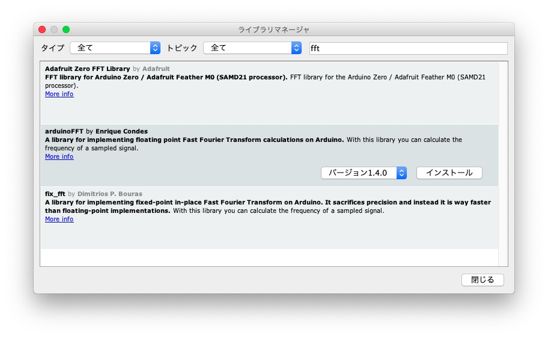</p>

                <p>ライブラリーの使い方は簡単です。</p>

                <script src="https://gist.github.com/TakehikoShimojima/98948bb944e55401ed956c9b3c121d74.js"></script>

                <p>ヘッダーファイルarduinoFFT.hをインクルードし、作業用のバッファーvReal[]とvImag[]を用意します。
                    バッファーサイズはサンプル数で2のべき乗にします。
                    バッファー、サンプル数、サンプリング周波数を指定してFFTオブジェクトを生成します。
                    サンプリングしたデーターをvReal[]に入れ、vImag[]は0クリアします。</p>

                <p>FFTの計算はWindowing()で窓関数を適用し、Compute()でFFTの計算をおこない、ComplexToMagnitude()で複素数から実数に変換します。
                    これでvReal[]の半分に周波数ごとの信号の大きさが計算されます。</p>

                <p>なお、ライブラリーについてくるサンプルプログラムは次のようなインターフェースでライブラリーを呼んでいますが、
                    ライブラリーのソースコードを見るとこれらの呼び方は非推奨(deprecated)と書かれているので、推奨されているインターフェースを使っています。</p>

                <script src="https://gist.github.com/TakehikoShimojima/67a3e8053d90e32395f1fe6cd0d4302a.js"></script>

                <p>プログラムは、loop関数の中で音をサンプリングし、FFT処理で音の周波数成分を求め、LCDに周波数ごとの音の強さを表示しています。
                    プログラム全体は次のようになります。</p>

                <script src="https://gist.github.com/TakehikoShimojima/13782a144548d1d77fa5e2ff1bc57411.js"></script>

                <p>プログラムをビルドして、M5Stackに転送し、動かします。
                    音源を用意していない状態、Audio Tone Generator LITEで1000Hz、4000Hz、16kHzの音を出した時の画面は次のようになりました。</p>

                <p>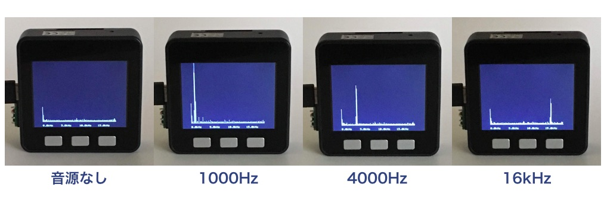</p>

                <p>次の動画はスマートフォンの「トーンジェネレーター」というアプリで1000Hzから10kHzまでの周波数の音を出したときの、FFTの画面です。</p>

                <iframe width="560" height="315" src="https://www.youtube.com/embed/Hc9ZwXMnWX0" frameborder="0" allow="accelerometer; autoplay; encrypted-media; gyroscope; picture-in-picture" allowfullscreen></iframe>

                <p>音の周波数変化に対応してグラフが変化しているのが確認できます。</p>

                <h2 if="summary">まとめ</h2>

                <p>私達の身の回りは環境雑音も含めて様々な音にあふれています。
                    測定したり周波数成分を調べてグラフ化すると、今まで気づかなかった音に気がつくこともあります。
                    皆さんもマイコンとセンサーと簡単なプログラムで調べてみてはいかがでしょうか？</p>

                <p style="margin-top: 40px;">この記事は<a href="https://ambidata.io/" target="_blank">アンビエントデーター</a>の下島が担当しました。</p>

            </div>

            <div class="col-lg-push-1 col-sm-3 col-lg-3 hidden-xs" style="margin-bottom: 40px;">
                <div style="float: left; margin-right: 10px;">
                    
                </div>
                <div style="overflow: hidden;">
                    <p>書いた人:下島健彦。<a href="https://ambidata.io" target="_blank">Ambient</a>開発者。アンビエントデーター代表取締役。</p>
                </div>
            </div>
            <div class="col-lg-push-1 col-sm-3 col-lg-3 hidden-xs submenu" style="margin-bottom: 40px;">
                <ul class="nav nav-pills nav-stacked">
                    <li class="open"><a href="index.html">16.M5Stackで音を測る</a></li>
                    <ul class="list-unstyled">
                        <li><a href="#mic">マイクモジュール</a></li>
                        <li><a href="#hardware">マイクをM5Stackに接続する</a></li>
                        <li><a href="#readmic">マイクの信号を読む</a></li>
                        <li><a href="#lcd">音の波形をLCDに表示する</a></li>
                        <li><a href="#fft">周波数成分を調べる</a></li>
                        <li><a href="#summary">まとめ</a></li>
                    </ul>
                </ul>
            </div>
            <div class="col-lg-push-1 col-sm-3 col-lg-3 hidden-xs submenu" id="backnumber">
            </div>
        </div>
    </div>
</div>

<div class="footer">
    <div class="container">
        <div class="row">
            <div>
                <h5>免責事項</h5>
                <p style="font-size:0.8em;">記事は実際に実験をおこなった上で書いていますが、動作を保証するものではありません。また本記事を利用したことにより生じる損害についてスイッチサイエンスおよびアンビエントデーターは一切の責任を負いません。</p>
            </div>
            <div class="col-xs-3">
                <ul>
                    <li></li>
                </ul>
            </div>
            <div class="col-xs-3">
                <ul>
                    <li></li>
                </ul>
            </div>
            <div class="col-xs-3">
                <ul>
                    <li></li>
                </ul>
            </div>
            <div class="col-xs-3">
                <ul>
                    <li></li>
                </ul>
            </div>
        </div>
        <div id="copyright">
            &copy; 2018 Switch Scinece, inc. &copy; 2018 AmbientData, Inc.
        </div>
    </div>
</div>

<script src="https://ajax.googleapis.com/ajax/libs/jquery/1.12.4/jquery.min.js"></script>
<script src="https://maxcdn.bootstrapcdn.com/bootstrap/3.3.7/js/bootstrap.min.js" integrity="sha384-Tc5IQib027qvyjSMfHjOMaLkfuWVxZxUPnCJA7l2mCWNIpG9mGCD8wGNIcPD7Txa" crossorigin="anonymous"></script>

<script>
    $(document).ready(function() {
        $('#backnumber').load('../backnumber.html');
    });
</script>

<!-- Global site tag (gtag.js) - Google Analytics -->
<script async src="https://www.googletagmanager.com/gtag/js?id=UA-4499733-1"></script>
<script>
  window.dataLayer = window.dataLayer || [];
  function gtag(){dataLayer.push(arguments);}
  gtag('js', new Date());

  gtag('config', 'UA-4499733-1');
</script>

</body>
</html>
